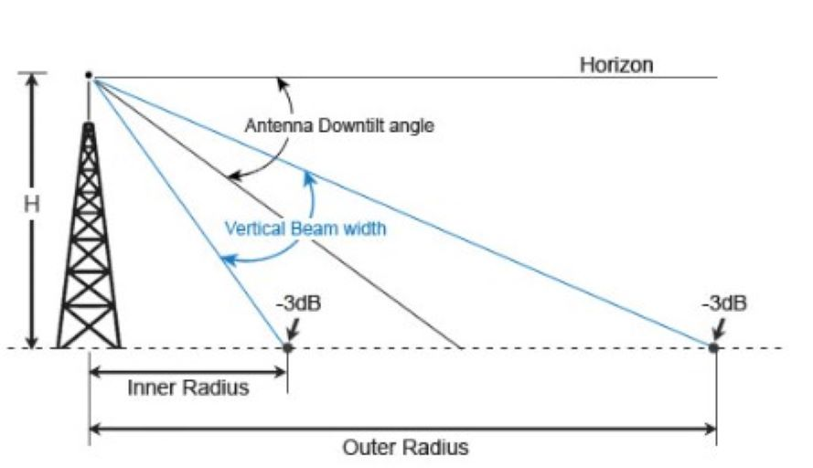

Calculadora de Tilt
Introduce los datos:
1. Calculo de Tilt (Teta M)
Altura (Y en m):
Distancia maxima (Xu en m):
Vertical BeamWidth (VBM en grados):
Calcular
Middle Tilt (Teta M):
°
Upper Tilt (Teta U):
°
Lower Tilt (Teta L):
°
2. Calculo de Distancia Maxima (Xu)
Altura (Y en m):
Vertical BeamWidth (VBM en grados):
Middle Tilt (Teta M en grados):
Calcular
Distancia Maxima (Xu):
m
Referencia de Calculo
